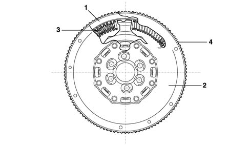
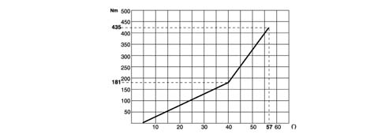

INTRODUCTION - ENGINE FLYWHEEL
- Path
- Descriptions > 10 ENGINE > 1024 CRANKSHAFT AND FLYWHEEL > 1024B FLYWHEEL > INTRODUCTION - ENGINE FLYWHEEL
- Kind
- system description
- Applies to
- engines: 2.4 JTD 20v; all production periods
- Interactive page
- https://sloeber94.github.io/elrnDB-aBrrSpdr/en/#/946003062
Applies to: engines: 2.4 JTD 20v; all production periods
ENGINE FLYWHEEL
Specifications
Type
Twin damper flywheel (DVA) with dual ramp. This flywheel consists of two masses, one forming one piece with the crankshaft and the other with the gearbox main shaft, via the clutch plate. There is a dual ramp, torsional flexible system between these two masses created by two pairs of springs with differentiated operation depending on the torque transmitted.
The clutch engagement mechanism, located between the dual flywheel and gearbox, consists of a rigid plate (unsprung) that improves gear manoeuvrability due to its reduced inertia.

- 1. Mass integral with engine
- 2. Mass integral with gearbox mainshaft
- 3. Flexible torsional damping system
- 4. Ring gear
